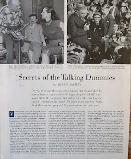

SECRETS OF THE TALKING DUMMIES; 5 pg VENTRILOQUIST ARTICLE May 9…
10/14/2012
SECRETS OF THE TALKING DUMMIES; 5 pg VENTRILOQUIST ARTICLE May 9, 1953 Saturday Evening Post
Quote from article Intro: "Did you ever hear the story of the dummy who choked when his master drank straight whiskey? Or Edgar Bergen's odd will, which leaves $10,000 to Charlie McCarthy? Or of the manikin who couldn't remember his lines? Do some voice throwers really think they are two persons? The evidence will surprise you..."
For sale now on eBay:
http://cgi.ebay.com/ws/eBayISAPI.dll?ViewItem&item=290792389853
{kind=link}

You will receive actual pages from the magazine. All excellent condition. Photos of The Great Lester, W. S. Berger in Vent Haven Museum, Paul Winchell and Jerry Mahoney with Diane Sinclair, Jimmy Nelson with pocket size dummy entertains Patti Page.Quote from article Intro: "Did you ever hear the story of the dummy who choked when his master drank straight whiskey? Or Edgar Bergen's odd will, which leaves $10,000 to Charlie McCarthy? Or of the manikin who couldn't remember his lines? Do some voice throwers really think they are two persons? The evidence will surprise you..."
For sale now on eBay:
http://cgi.ebay.com/ws/eBayISAPI.dll?ViewItem&item=290792389853